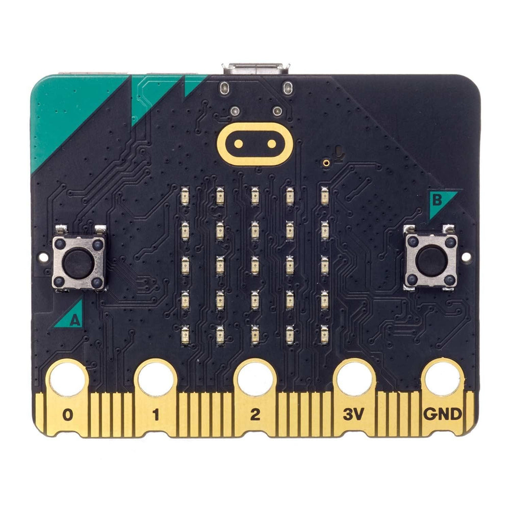

Ayke van Laethem
she/her 🏳️⚧️
Bare metal programming from the ground up
Who am I
- MicroPython:
worked on nrf5x support long ago -
 TinyGo:
TinyGo:
creator and maintainer - Maker of blinky jewelry
Topics for this talk
- How to read datasheets
- Linker scripts
- Interrupt vectors
- Blinking LEDs
"Hello world"
Blink LED
Turn on LED!
Arduino Uno
-
 ATmega328
ATmega328 - 20MHz
- 32kB flash, 2kB RAM
- AVR instruction set
- Arduino IDE
I/O registers!


#include <stdint.h>
// Memory mapped I/O (values from the datasheet).
#define DDRB *(volatile uint8_t*)(0x24)
#define PORTB *(volatile uint8_t*)(0x25)
void _start() {
DDRB |= 1 << 5; // set pin PB5 as an output
PORTB |= 1 << 5; // set pin PB5 high
// wait forever
while (1) {}
}sbi 0x04, 0x5 ; set bit 5 in DDRB (0x24)
sbi 0x05, 0x5 ; set bit 5 in PORTB (0x25)
rjmp .-2 ; jump back to the same instruction (loop)$ avr-gcc -c -o firmware.o -Os -mmcu=atmega328p arduino-1.c
$ avr-ld -o firmware.elf firmware.o
$ avrdude -c arduino -p atmega328p -P /dev/ttyACM0 \
-U flash:w:firmware.elf:e
Reading 6 bytes for flash from input file firmware.elf
Writing 6 bytes to flash
Writing | ################################################## | 100% 0.04 s
Reading | ################################################## | 100% 0.02 s
6 bytes of flash verified
Avrdude done. Thank you.void _start() {
DDRB |= (1<<5); // set pin PB5 as an output
// main loop
while (1) {
for (long i=1000000; i != 0; i--) {
PORTB |= (1<<5); // set pin PB5 high (set bit)
}
for (long i=1000000; i != 0; i--) {
PORTB &= ~(1<<5); // set pin PB5 low (clear bit)
}
}
}
MEMORY {
FLASH (r) : ORIGIN = 0, LENGTH = 32k
}
SECTIONS
{
.text : {
*(.text)
} > FLASH
}$ avr-gcc -c -o firmware.o -Os -mmcu=atmega328p arduino-2.c
$ avr-ld -o firmware.elf firmware.o -T linkerscript-1.ld
$ avrdude -c arduino -p atmega328p -P /dev/ttyACM0 \
-U flash:w:firmware.elf:e
Reading 40 bytes for flash from input file firmware.elf
Writing 40 bytes to flash
Writing | ################################################## | 100% 0.04 s
Reading | ################################################## | 100% 0.02 s
40 bytes of flash verified
Avrdude done. Thank you.

.section .vectors, "a", %progbits
jmp __vector_RESET ; address 0
jmp __vector_INT0 ; address 4
jmp __vector_INT1 ; address 8
jmp __vector_PCINT0 ; address 12
jmp __vector_PCINT1 ; address 16
jmp __vector_PCINT2 ; address 20
jmp __vector_WDT ; address 24
jmp __vector_TIMER2_COMPA ; address 28
jmp __vector_TIMER2_COMPB ; address 32
jmp __vector_TIMER2_OVF ; address 36
; etc$ avr-gcc -c -o firmware.o -Os -mmcu=atmega328p arduino-2.c
$ avr-gcc -c -o vectors-1.o -mmcu=atmega328p vectors-1.s
$ avr-gcc -c -o vectors.o -mmcu=atmega328p vectors-1.s
$ avr-ld -o firmware.elf firmware.o vectors.o -T linkerscript-1.ld
avr-ld: vectors.o:(.vectors+0x0): undefined reference to `__vector_RESET'
avr-ld: vectors.o:(.vectors+0x4): undefined reference to `__vector_INT0'
avr-ld: vectors.o:(.vectors+0x8): undefined reference to `__vector_INT1'
avr-ld: vectors.o:(.vectors+0xc): undefined reference to `__vector_PCINT0'
avr-ld: vectors.o:(.vectors+0x10): undefined reference to `__vector_PCINT1'
avr-ld: vectors.o:(.vectors+0x14): undefined reference to `__vector_PCINT2'
avr-ld: vectors.o:(.vectors+0x18): undefined reference to `__vector_WDT'
avr-ld: vectors.o:(.vectors+0x1c): undefined reference to `__vector_TIMER2_COMPA'
avr-ld: vectors.o:(.vectors+0x20): undefined reference to `__vector_TIMER2_COMPB'
avr-ld: vectors.o:(.vectors+0x24): undefined reference to `__vector_TIMER2_OVF'
[etc]
void __vector_RESET() {
DDRB |= (1<<5); // set pin PB5 as an output
// main loop
while (1) {
for (long i=1000000; i != 0; i--) {
PORTB |= (1<<5); // set pin PB5 high (set bit)
}
for (long i=1000000; i != 0; i--) {
PORTB &= ~(1<<5); // set pin PB5 low (clear bit)
}
}
}$ avr-gcc -c -o firmware.o -Os -mmcu=atmega328p arduino-2.c
$ avr-gcc -c -o vectors-1.o -mmcu=atmega328p vectors-1.s
$ avr-gcc -c -o vectors.o -mmcu=atmega328p vectors-1.s
$ avr-ld -o firmware.elf firmware.o vectors.o -T linkerscript-1.ld
avr-ld: vectors.o:(.vectors+0x4): undefined reference to `__vector_INT0'
avr-ld: vectors.o:(.vectors+0x8): undefined reference to `__vector_INT1'
avr-ld: vectors.o:(.vectors+0xc): undefined reference to `__vector_PCINT0'
avr-ld: vectors.o:(.vectors+0x10): undefined reference to `__vector_PCINT1'
avr-ld: vectors.o:(.vectors+0x14): undefined reference to `__vector_PCINT2'
avr-ld: vectors.o:(.vectors+0x18): undefined reference to `__vector_WDT'
avr-ld: vectors.o:(.vectors+0x1c): undefined reference to `__vector_TIMER2_COMPA'
avr-ld: vectors.o:(.vectors+0x20): undefined reference to `__vector_TIMER2_COMPB'
avr-ld: vectors.o:(.vectors+0x24): undefined reference to `__vector_TIMER2_OVF'
avr-ld: vectors.o:(.vectors+0x28): undefined reference to `__vector_TIMER1_CAPT'
[etc]
.section .text
.global __vector_default
__vector_default:
rjmp __vector_default
.weak __vector_INT0
.set __vector_INT0, __vector_default
.weak __vector_INT1
.set __vector_INT1, __vector_default
.weak __vector_PCINT0
.set __vector_PCINT0, __vector_default
.weak __vector_PCINT1
.set __vector_PCINT1, __vector_default
; [etc].section .text
.global __vector_default
__vector_default:
rjmp __vector_default
.macro IRQ handler
.weak \handler
.set \handler, __vector_default
.endm
IRQ __vector_INT0
IRQ __vector_INT1
IRQ __vector_PCINT0
IRQ __vector_PCINT1
IRQ __vector_PCINT2
IRQ __vector_WDT
; [etc]$ avr-gcc -c -o firmware.o -Os -mmcu=atmega328p arduino-3.c
$ avr-gcc -c -o vectors.o -mmcu=atmega328p vectors-2.s
$ avr-ld -o firmware.elf firmware.o vectors.o -T linkerscript-1.ld
$ avrdude -c arduino -p atmega328p -P /dev/ttyACM0 -U flash:w:firmware.elf:e
Reading 146 bytes for flash from input file firmware.elf
Writing 146 bytes to flash
Writing | ################################################## | 100% 0.07 s
Reading | ################################################## | 100% 0.03 s
146 bytes of flash verified
Avrdude done. Thank you.BBC micro:bit v2
-  nRF52833
- 64MHz
- 512kB flash, 128kB RAM
- ARM instruction set
(Cortex-M4)
MEMORY {
FLASH (r) : ORIGIN = 0, LENGTH = 512k
}
ENTRY(Reset_Handler)
SECTIONS
{
.text : {
KEEP(*(.vectors))
*(.text)
} > FLASH
}__attribute__((section(".vectors")))
const uintptr_t __vector_table[16] = {
(uintptr_t)(&__stack_pointer), // Initial stack pointer
(uintptr_t)Reset_Handler, // Reset Handler
(uintptr_t)NMI_Handler, // NMI Handler
(uintptr_t)HardFault_Handler, // Hard Fault Handler
(uintptr_t)MemManage_Handler, // MPU Fault Handler
(uintptr_t)BusFault_Handler, // Bus Fault Handler
(uintptr_t)UsageFault_Handler, // Usage Fault Handler
(uintptr_t)SecureFault_Handler, // Secure Fault Handler
0, // Reserved
0, // Reserved
0, // Reserved
(uintptr_t)SVC_Handler, // SVC Handler
(uintptr_t)DebugMon_Handler, // Debug Monitor Handler
0, // Reserved
(uintptr_t)PendSV_Handler, // PendSV Handler
(uintptr_t)SysTick_Handler, // SysTick Handler
// more interrupt handlers follow
};extern uintptr_t __stack_pointer[0];void Default_Handler(void) {
while (1) {}
}
void Reset_Handler (void);
void NMI_Handler (void) __attribute__ ((weak, alias("Default_Handler")));
void HardFault_Handler (void) __attribute__ ((weak, alias("Default_Handler")));
void MemManage_Handler (void) __attribute__ ((weak, alias("Default_Handler")));
void MemoryManagement_Handler (void) __attribute__ ((weak, alias("Default_Handler")));
void BusFault_Handler (void) __attribute__ ((weak, alias("Default_Handler")));
void UsageFault_Handler (void) __attribute__ ((weak, alias("Default_Handler")));
void SecureFault_Handler (void) __attribute__ ((weak, alias("Default_Handler")));
void SVC_Handler (void) __attribute__ ((weak, alias("Default_Handler")));
void DebugMon_Handler (void) __attribute__ ((weak, alias("Default_Handler")));
void PendSV_Handler (void) __attribute__ ((weak, alias("Default_Handler")));
void SysTick_Handler (void) __attribute__ ((weak, alias("Default_Handler")));
typedef struct {
volatile uint32_t OUT;
volatile uint32_t OUTSET;
volatile uint32_t OUTCLR;
volatile uint32_t IN;
volatile uint32_t DIR;
volatile uint32_t DIRSET;
volatile uint32_t DIRCLR;
volatile uint32_t LATCH;
volatile uint32_t DETECTMODE;
} GPIO_Type;
#define P0 ((GPIO_Type*)(0x50000504))
void Reset_Handler(void) {
P0->DIRSET = 1 << 21; // set P0.21 (ROW1) as output
P0->DIRSET = 1 << 28; // set P0.28 (COL1) as output
P0->OUTSET = 1 << 21; // set P0.21 (ROW1) high
while (1) {}
}$ clang -c --target=armv7em-none-eabi-o \
-o microbit-vector.o microbit-vector.c
$ clang -c --target=armv7em-none-eabi \
-o microbit.o microbit-led.c
$ ld.lld -o microbit.elf microbit-vector.o microbit.o \
-T microbit.ld
$ ld.lld -o microbit.elf microbit-vector.o microbit.o \
-T microbit.ld
ld.lld: error: undefined symbol: __stack_pointer
>>> referenced by microbit-vector.c
>>> microbit-vector.o:(__vector_table)MEMORY {
FLASH (r) : ORIGIN = 0, LENGTH = 512k
RAM (rwx) : ORIGIN = 0x20000000, LENGTH = 128k
}
ENTRY(Reset_Handler)
SECTIONS
{
.text : {
KEEP(*(.vectors))
*(.text)
} > FLASH
.stack : {
. += 4096;
__stack_pointer = .;
} > RAM
}$ clang -c --target=armv7em-none-eabi-o \
-o microbit-vector.o microbit-vector.c
$ clang -c --target=armv7em-none-eabi \
-o microbit.o microbit-led.c
$ ld.lld -o microbit.elf microbit-vector.o microbit.o \
-T microbit.ld
$ openocd -f interface/cmsis-dap.cfg -f target/nrf52.cfg \
-c 'transport select swd' \
-c 'program microbit.elf reset exit'
[...lots of verbose logging...]
** Programming Finished **
** Resetting Target **
shutdown command invokedvoid Reset_Handler(void) {
P0->DIRSET = 1 << 21; // set P0.21 (ROW1) as output
P0->DIRSET = 1 << 28; // set P0.28 (COL1) as output
while (1) {
for (int i=0; i<1000000; i++) {
P0->OUTSET = 1 << 21; // set P0.21 (ROW1) high
}
for (int i=0; i<1000000; i++) {
P0->OUTCLR = 1 << 21; // set P0.21 (ROW1) low
}
}
}$ clang -c --target=armv7em-none-eabi-o \
-o microbit-vector.o microbit-vector.c
$ clang -c --target=armv7em-none-eabi \
-o microbit.o microbit-blink.c
$ ld.lld -o microbit.elf microbit-vector.o microbit.o \
-T microbit.ld
$ openocd -f interface/cmsis-dap.cfg -f target/nrf52.cfg \
-c 'transport select swd' \
-c 'program microbit.elf reset exit'
[...lots of verbose logging...]
** Programming Finished **
** Resetting Target **
shutdown command invokedQuestions?
Slides:https://aykevl.nl/talks/2025-why2025-firmware/
How to find me:
@ayke@hachyderm.io
@aykevl
@aykevl